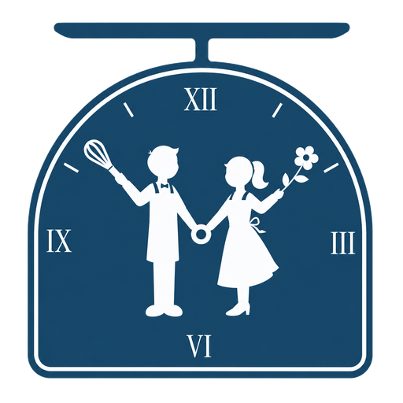

Concept 01Scale
把愛加一克
最貼近品牌名與 logo 的秤。讀者不是按讚，而是替這本書多放一點心意；指針只看 0、1、3、5、10+ 五個門檻。

Reader response prototypes
這四個方向都從烘焙秤、親手做、聚會陪伴與送禮延伸。點擊每張卡片中央的按鈕， 可以比較未回應與已回應後的圖案、文案、動效和 dashboard 計數語氣。
最貼近品牌名與 logo 的秤。讀者不是按讚，而是替這本書多放一點心意；指針只看 0、1、3、5、10+ 五個門檻。
像收到一盒手作甜點。語氣溫柔、正式，適合閱讀結尾的交付感。
把讀者回應變成最後一道裝飾。比較可愛，也最有 DIY 甜點課的參與感。
直接延伸 logo 女孩手上的花。最安靜、最像紀念，也最容易做成品牌符號。
「把愛加一克」把品牌名、烘焙秤、讀者心意三件事扣在一起，最適合取代現在的通用愛心。
Dashboard、閱讀頁、分享頁都可以用同一套語言延伸：心意克數、收到的禮物、糖霜筆數、留下的花。